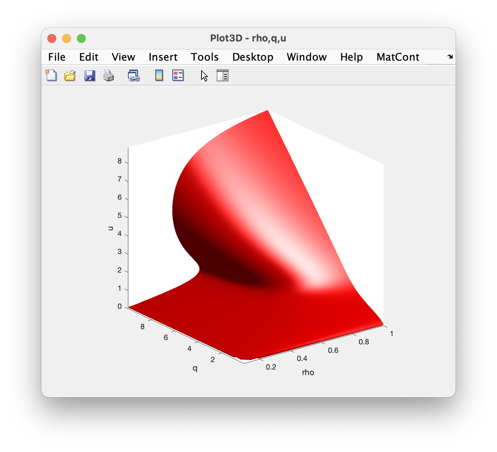
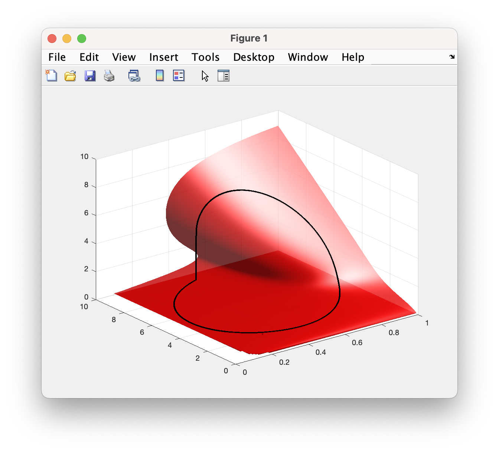
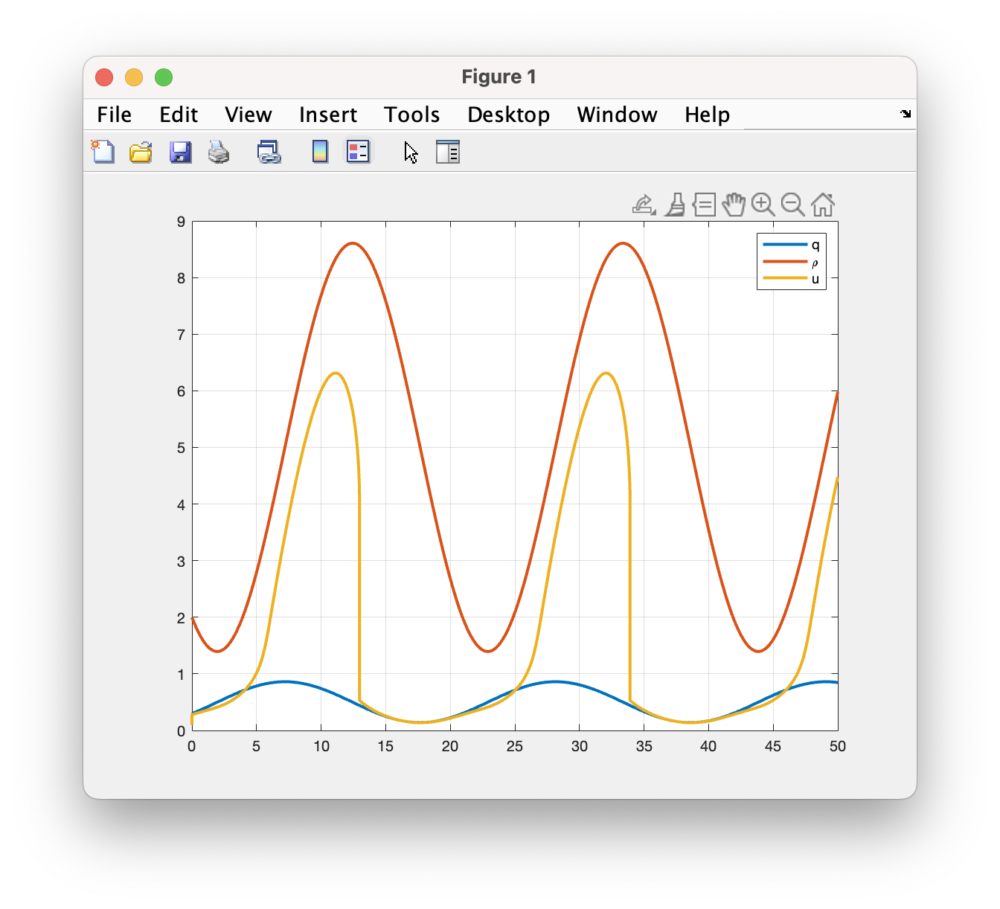

9 Fast-Slow systems
This lecture is based on (Keener and Sneyd 2009, vol. 8/I, sec. 1.6.3)
9.1 Michaelis-Menten law
We consider again the reaction: \[ \ce{S + E <=>[$k_1$][$k_{-1}$] C ->[$k_2$] P + E} \]
The system is: \[ \left\{ \begin{aligned}{} [\ce{S}]' &= k_{-1}[\ce{C}] - k_1 [\ce{S}][\ce{E}], \\ [\ce{E}]' &= (k_{-1}+k_1)[\ce{C}] - k_1 [\ce{S}][\ce{E}], \\ [\ce{C}]' &= k_1 [\ce{S}][\ce{E}] - (k_{-1} + k_2)[\ce{C}], \\ [\ce{P}]' &= k_2 [\ce{C}]. \end{aligned} \right. \]
We can remove one equation and substitute \([\ce{E}](t) = e_0 - [\ce{C}](t)\). We end up with a system of 2 equations: \[ \left\{ \begin{aligned}{} [\ce{S}]' &= k_{-1}[\ce{C}] - k_1 [\ce{S}](e_0-[\ce{C}]), \\ [\ce{C}]' &= k_1 [\ce{S}](e_0-[\ce{C}]) - (k_{-1} + k_2)[\ce{C}], \\ \end{aligned} \right. \]
with initial conditions \([\ce{S}](0) = s_0 > 0\) and \([\ce{C}](0) = 0\).
Here, we would like to show that the production rate follows the Michaelis-Menten law: \[ [\ce{P}]' = V = \frac{V_\mathrm{max}[\ce{S}]}{K_m + [\ce{S}]}, \]
9.1.1 The quasi-equilibrium approximation
One way to derive the law is with the quasi-equilibrium assumption. This approach was proposed by Michaelis and Menten in 1913. They assumed that the first reaction \(\ce{S + E -> C}\) is approximately at equilibrium, thus: \[ K_1 = \frac{k_{-1}}{k_1} = \frac{[\ce{S}][\ce{E}]}{[\ce{C}]}. \]
Since \([\ce{C}] + [\ce{E}] = e_0\), we conclude that: \[ K_1 = \frac{[\ce{S}](e_0-[\ce{C}])}{[\ce{C}]}, \quad\Rightarrow\quad [\ce{C}] = \frac{e_0[\ce{S}]}{K_1 + [\ce{S}]}. \]
But \([\ce{P}]' = V = k_2[\ce{C}]\), so: \[ V = \frac{k_2 e_0[\ce{S}]}{K_1 + [\ce{S}]}, \]
which is Michaelis-Menten law with \(K_m = K_1\) and \(V_\mathrm{max} = k_2 e_0\).
We remark that this derivation is an approximation. In fact, the only true equilibrium of the system is the origin, which is quite useless as an approximation. Here, we can cannot conclude that \([\ce{S}]' = 0\), in spite of the assumption. What we are actually saying is that, as we use \(\ce{S}\) in the reaction, the concentration of the complex approximately follows the concentration of \(\ce{S}\) according to the Michaelis-Menten law.
We can derive a law for \([\ce{S}]\) by noting that (from the system) \[ [\ce{S}]' + [\ce{C}]' = -k_2 [\ce{C}], \]
so \[ \frac{\mathrm{d}}{\mathrm{d}t}\bigl( [\ce{S}] + [\ce{C}] \bigr) = \frac{\mathrm{d}}{\mathrm{d}t}\Bigl( [\ce{S}] + \frac{e_0[\ce{S}]}{K_1 + [\ce{S}]} \Bigr) = -k_2 \frac{e_0[\ce{S}]}{K_1 + [\ce{S}]}, \]
and after rearranging we have \[ \frac{\mathrm{d}[\ce{S}]}{\mathrm{d}t}\Bigl( 1 + \frac{K_1 e_0}{(K_1 + [\ce{S}])^2} \Bigr) = -\frac{k_2 e_0[\ce{S}]}{K_1 + [\ce{S}]}, \]
which gives a differential equation for \([\ce{S}](t)\).
The quasi-equilibrium approximation is very easy, powerful, and extensively applied in enzymatic reaction. It is possible to prove this approximation in a more mathematical way by assuming \(k_{-1} \gg k_2\), but we will follow a different approach below.
9.1.2 The quasi-steady-state approximation
First, let us rescale the equations by the transformations: \[ x = \frac{[\ce{S}]}{s_0}, \quad y = \frac{[\ce{C}]}{e_0}, \quad \tau = k_1 e_0 t. \]
After changing the variables, we get: \[ \left\{ \begin{aligned} \frac{\mathrm{d}x}{\mathrm{d}\tau} &= \frac{k_{-1}}{s_0 k_1} y - x (1-y), \\ \frac{\mathrm{d}y}{\mathrm{d}\tau} &= \frac{s_0}{e_0} x (1-y) - \frac{k_{-1} + k_2}{k_1 e_0} y, \\ \end{aligned} \right. \]
that we can rearrange in the following form: \[ \left\{ \begin{aligned} \frac{\mathrm{d}x}{\mathrm{d}\tau} &= -x + y(x+\alpha), \\ \varepsilon \frac{\mathrm{d}y}{\mathrm{d}\tau} &= x -y(x + \beta), \end{aligned} \right. \]
where: \[ \alpha = \frac{k_{-1}}{s_0 k_1}, \quad \beta = \frac{k_{-1} + k_2}{k_1 s_0}, \quad \varepsilon = \frac{e_0}{s_0}. \]
Next, suppose that \(\varepsilon \ll 1\), that is the initial concentration of the enzyme is, at the start, very low compared to the concentration of the substrate. Thus, we could assume that \(\varepsilon y' \approx 0\): \[ \left\{ \begin{aligned} \frac{\mathrm{d}x}{\mathrm{d}\tau} &= -x + y(x+\alpha), \\ 0 &= x -y(x + \beta). \end{aligned} \right. \]
This approach is called quasi-steady-state approximation. From the second equation we conclude that \[ y = \frac{x}{\beta + x}, \quad\Rightarrow\quad [\ce{C}] = \frac{[e_0 \ce{S}]}{\frac{k_{-1} + k_2}{k_1} + [\ce{S}]}. \]
We conclude that with the QSS approximation the Michaelis-Menten law has the same form with \(V_\mathrm{max} = k_2 e_0\) (as before) and \(K_m = \frac{k_{-1}+k_2}{k_1}\) (different, before was \(K_m = K_1\)). The difference is minimal: in the quasi-equilibrium approximation, we have \(k_2 \ll k_{-1}\), so \(K_m \approx K_1\), whereas for the QSS approximation we assume \(\varepsilon \ll 1\).
The Michaelis-Menten law is quite general and often evoked without deriving it (similarly to Holling type predations.) For us, it is the main ingredient for more complex reactions.
9.2 Singular perturbation theory
Let dive a bit deeper on the QSS approximation. The idea is the following: since \(\varepsilon\) is small, we could try to approximate the solution of the IVP \[ \left\{ \begin{aligned} \frac{\mathrm{d}x_\varepsilon}{\mathrm{d}\tau} &= -x_\varepsilon + y_\varepsilon(x_\varepsilon+\alpha), \\ \varepsilon \frac{\mathrm{d}y_\varepsilon}{\mathrm{d}\tau} &= x_\varepsilon -y_\varepsilon(x_\varepsilon + \beta), \\ x_\varepsilon(0) &= 1, \\ y_\varepsilon(0) &= 0, \end{aligned} \right. \]
with another IVP obtained from the limit \(\varepsilon\to 0\). Ideally, the solution of such IVP, say \((x(t),y(t))\), should be the limit of \((x_\varepsilon(t),y_\varepsilon(t))\) for \(\varepsilon\to 0\). This approach is called perturbation argument.
Very often it is enough to take the limit in the ODE, as we did before. So we could approximate the problem with \[ \left\{ \begin{aligned} \frac{\mathrm{d}x}{\mathrm{d}\tau} &= -x + y(x+\alpha), \\ 0 &= x -y(x + \beta), \\ x(0) &= 1, \\ y(0) &= 0. \end{aligned} \right. \]
However, in this case it does not work, because the problem is not well-posed. In fact, we have 2 initial conditions, but only one ODE! The second ODE became an algebraic equation (this system is called Differential Algebraic Equation). We can only satisfy one initial condition. From the second equation we have: \[ y = \frac{x}{x + \beta}, \]
for \(x(0)=1\), \(y(0)=\frac{1}{1+\beta}\), whereas for \(y(0)=0\) we have \(x(0)=0\). The combination \(x(0)=1\) and \(y(0)=0\) does not work. (We say that the initial condition is not compatible.) The perturbation argument is singular.
We need a better strategy. Let us rescale the time as follows: \[ \eta = \frac{\tau}{\varepsilon}, \quad x(\tau) = x(\varepsilon \eta) = \tilde{x}(\eta), \quad y(\tau) = y(\varepsilon \eta) = \tilde{y}(\eta). \]
The scale \(\eta\) is fast, because one unit of \(\eta\) time corresponds to \(\varepsilon\) units of \(\tau\) time. The new system reads: \[ \left\{ \begin{aligned} \frac{\mathrm{d}\tilde{x}_\varepsilon}{\mathrm{d}\eta} &= \varepsilon \Bigl( -\tilde{x}_\varepsilon + \tilde{y}_\varepsilon(\tilde{x}_\varepsilon+\alpha) \Bigr), \\ \frac{\mathrm{d}\tilde{y}_\varepsilon}{\mathrm{d}\eta} &= \tilde{x}_\varepsilon -\tilde{y}_\varepsilon(\tilde{x}_\varepsilon + \beta), \\ \tilde{x}_\varepsilon(0) &= 1, \\ \tilde{y}_\varepsilon(0) &= 0. \end{aligned} \right. \]
As before, we formally take \(\varepsilon = 0\), and obtain: \[ \left\{ \begin{aligned} \frac{\mathrm{d}\tilde{x}}{\mathrm{d}\eta} &= 0, \\ \frac{\mathrm{d}\tilde{y}}{\mathrm{d}\eta} &= \tilde{x} -\tilde{y}(\tilde{x} + \beta), \\ \tilde{x}(0) &= 1, \\ \tilde{y}(0) &= 0. \end{aligned} \right. \]
The perturbation in this case is not singular, we can solve it and find: \[ \begin{aligned} \tilde{x}(\eta) &= 1, \\ \tilde{y}(\eta) &= \frac{1 - e^{-(1+\beta)\eta}}{1+\beta}. \end{aligned} \]
The second equation follows from the integration of the second ODE, which is linear. The solution of the fast problem (in the variable \(\eta\)) represents the dynamic from the initial condition up to… something we will see. For \(\eta\to\infty\), thus for long time in the metric of the fast system (but not so long time for the slow system), we have: \[ \begin{aligned} \tilde{x}(\eta) &\to 1, \\ \tilde{y}(\eta) &\to \frac{1}{1+\beta}. \end{aligned} \]
Interestingly, for long \(\eta\) the fast solution matches the slow solution \((x(\tau),y(\tau))\) for \(\tau=0\)! In other words, the equilibrium of the fast system provides a compatible initial condition for the slow system.
We are now in condition to approximate the solution as \(\varepsilon\to0\):
For \(\tau\in[0,\varepsilon)\), we have the fast solution \[ \begin{aligned} x(\tau) &= 1, \\ y(\tau) &= \frac{1 - e^{-\frac{1+\beta}{\varepsilon}\tau}}{1+\beta}. \end{aligned} \]
For \(\tau > \varepsilon\), we have the slow solution: \[ \begin{aligned} \frac{\mathrm{d}x}{\mathrm{d}\tau} &= -x + \frac{x(x+\alpha)}{x+\beta}, \\ y(\tau) &= \frac{x(\tau)}{x(\tau)+\beta}. \end{aligned} \]
Note that in the limit we “forget” the fast dynamic.
9.2.1 The Tichonov theorem
In general, we can consider the following problem: \[ \left\{\begin{aligned} \varepsilon \frac{\mathrm{d}z_\varepsilon}{\mathrm{d}t} &= F(z_\varepsilon,y_\varepsilon,\varepsilon), \\ \frac{\mathrm{d}y_\varepsilon}{\mathrm{d}t} &= f(z_\varepsilon,y_\varepsilon,\varepsilon), \\ z_\varepsilon(t_0) &= y_0, \\ y_\varepsilon(t_0) &= z_0. \end{aligned}\right. \]
Suppose that we satisfy all the hypotheses for well-posedness.
When \(\varepsilon \ll 1\), we identify \(z(t)\) as the fast variable, and \(y(t)\) as the slow variable.
Let \(z = \phi(y)\) be a root of the equation \(F(z,y,0)=0\) defined in some closed and bounded domain \(D\subset\mathbb{R}^m\), that is, \(F(\phi(y),y,0)=0\) for \(y\in D\). Consider the degenerate (slow) system: \[ \left\{\begin{aligned} \frac{\mathrm{d}y}{\mathrm{d}t} &= f\bigl(\phi(y),y,0\bigr), \\ y(t_0) &= y_0, \end{aligned}\right. \]
where we denote by \(y(t)\) its solution. We would like to show that the solution \((\phi(y(t)),y(t))\) is the limit of the original solution \((z_\varepsilon(t),y_\varepsilon(t))\) as \(\varepsilon \to 0\).
We have the following result.
Theorem 9.1 Suppose that
\(z=\phi(y)\) is an isolated root in \(D\), positively stable uniformly in \(y\in D\) with respect to the adjointed system \[ \frac{\mathrm{d}z}{\mathrm{d}\tau} = F(z,y,0), \quad \tau = \frac{t}{\varepsilon}. \]
the initial point \((z_0,y_0)\) is in the basin of attraction of the equilibrium \(\phi(y)\),
the solution \(y(t)\) of the degerate system belongs to \(D\) for all \(t\in[t_0,T]\).
Then the solution \((z_\varepsilon(t),y_\varepsilon(t))\) of the overall system tends to the degenerate solution \((\phi(y(t)),y(t))\) as \(\varepsilon \to 0\), in the sense that, for any \(T_0 \in (t_0, T)\), \[ \lim_{\varepsilon\to 0} (z_\varepsilon(t), y_\varepsilon(t)) = (\phi(y(t)),y(t)), \]
for \(t_0 < t < T_0 \le T\).
The proof of the theorem is technical, but intuitive. At the beginning, we have the fast dynamics, that will bring the initial point \((z_0,y_0)\) at equilibrium for the fast system. This happens for \(y\) fixed and \(z(\tau)\) converging towards the equilibrium \(z=\phi(y)\). This dynamic occurs in \(\mathcal{O}(\varepsilon)\) units of time. So, as \(\varepsilon\to 0\) we can ignore it and suppose that we are already at equilibrium and starting from \((\phi(y_0),y_0)\). Once at equilibrium, we have the slow dynamics in \(y(t)\). Note that we cannot deviate from the manifold \(z = \phi(y)\), because it is asymptotically stable and we converge quickly towards it.
What if we move off the manifold? For instance, consider the spruce-budworm system, \[ \left\{\begin{aligned} \varepsilon u' &= \rho u (1-u/q) - \frac{u^2}{1+u^2},\\ \rho' &= f(u,\rho,q), \\ q' &= g(u,\rho,q), \end{aligned}\right. \]
where \(u(t)\) is fast, and \(\rho(t)\) and \(q(t)\) are slow. We know that \[ \psi(u,\rho,q) = \rho (1-u/q) - \frac{u}{1+u^2} = 0, \]
defines a surface in \(\mathbb{R}^3\) of equilibria for the fast dynamics. However, we cannot represent this as a function: \[ u = \phi(\rho,q), \]
or at least not always. The function \(\phi\) would be multi-valued (for some choice of the parameters we can have up to 3 equilibria).

We can define multiple surfaces: \[ \begin{aligned} u &= \phi_1(\rho,q), \quad (\rho,q) \in D_1, \\ u &= \phi_2(\rho,q), \quad (\rho,q) \in D_2, \\ u &= \phi_3(\rho,q), \quad (\rho,q) \in D_3, \end{aligned} \]
one for each equilibrium. The domains overlap: in the bistable region, all functions are well-defined. Note also that \(\phi_2\) is always unstable, so we will never go there.
Now we can apply the Theorem, very some care concerning the initial conditions. Depending on where we start, we may go to a different branch.
Once on the surface, we have the slow dynamics: \[ \left\{\begin{aligned} \rho' &= f(\phi_i(\rho,q),\rho,q), \\ q' &= g(\phi_i(\rho,q),\rho,q), \end{aligned}\right. \]
with \(i=1,3\) depending on the stable branch. Actually, if the initial condition \((\rho_0,q_0)\in D_2\), the bistable region, then \(i=1\) if \(u_0 < \phi_2(\rho_0,q_0)\) otherwise \(i=3\). If \((\rho_0,q_0)\in D_i \setminus D_2\), that is away from the bistable region, then the branch is \(\phi_i\).
Until \((\rho(t),q(t))\in D_i\), the dynamic proceeds with no issues. However, if \((\rho(t),q(t))\) reaches the boundary of \(D_i\), then the slow dynamic is over. Say that this happens at some time \(T_0 > t_0\).
We can continue, and apply again the Tichonov theorem with initial condition slightly off the “rim” of the surface, and look for another stable branch of equilibria. Then we go there and we will have a new slow dynamic.
Below 2 examples: in the first case we move counterclockwise in the \((\rho,q)\) plane. In the other, we move clockwise.


Note also the temporal dynamic, where \(u\) proceeds smoothly until a sudden drop (around \(t=12\) and \(t=34\)). This is when we have the fast dynamic.
